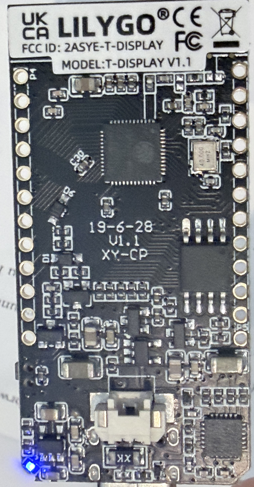

Boombox hardware notes
Board: LILYGO T-Display Q125 16 MB (user-confirmed)
Pin-dependent work is assignment-gated. The M2 I2S map BCK/LRCK/DIN = GPIO26/27/25 passed the review and was wired on 2026-07-18. No other GPIO may be configured or driven until that specific assignment is checked against the official Q125/V18 pinout, schematic, boot straps, header exposure, and onboard functions. The authoritative table is build plan §10.4.
M2 live state (2026-07-18): the audited Philips-I2S image is flashed. It booted on ESP-IDF v6.0.2, reconnected over A2DP, configured the external-I2S service at 44.1 kHz, and processed five packet-bearing playback trials. The user then heard a 60-second 1 kHz tone through the PCM5102A line-out and a proven Onn AUX speaker/cable; powered BCK/LCK/DIN readings each averaged about 1.5 V DC during the tone. M2 core end-to-end audio passes.
What is measured (read-only identification, 2026-07-17)
| Property | Value | How established |
|---|---|---|
| Serial port (macOS) | /dev/cu.usbserial-5B1F0057851 | USB enumeration, no extra driver |
| USB–UART bridge | WCH CH9102 family (VID:PID 1a86:55d4) | USB descriptors |
| Chip | ESP32-D0WDQ6-V3, revision 3.1 | esptool chip identification |
| CPU | Dual-core Xtensa LX6 @ 240 MHz | esptool |
| Crystal | 40 MHz | esptool |
| MAC address | a4:f0:0f:d9:71:b8 | esptool (read-only) |
| Flash | External SPI, 16 MB (Winbond, mfr 0xEF, device 0x4018), 3.3 V | esptool flash-id (read-only) |
These are measured facts about the die and flash. They are deliberately recorded separately from the product identity below: the measurements identify the silicon; the user-supplied official listing identifies the product. Both agree on every overlapping fact.
Board identity (user-confirmed, official-source-corroborated)
The user supplied the official product listing for this board: LILYGO T-Display, variant 42159376466101 — “16MB [Q125]”, SKU Q125, no shell. Per that page: classic ESP32 (dual-core Xtensa LX6) with Wi-Fi 802.11 b/g/n and Bluetooth 4.2 + BLE (classic Bluetooth — so the A2DP plan is sound), CH9102 serial bridge, 16 MB flash option, and a 1.14″ ST7789/ST7789V IPS TFT, 135×240, 4-wire SPI, 3.3 V. Every point corroborates the measured facts above (classic ESP32 die, CH9102, Winbond 16 MB).
As of 2026-07-17 the physical PCB is also directly verified: both sides
were photographed and the silkscreen reads MODEL: T-DISPLAY V1.1,
FCC ID 2ASYE-T-DISPLAY, PCB date 19-6-28
(2019-06-28), XY-CP — so the physical revision is
V1.1, and the official schematic has been read to resolve
the one open pin (TFT_RST = GPIO23, below). The photos and the schematic
close the first open items of the
build plan's Phase 0.
Board photos — our unit (2026-07-17)
Both sides of the attached board, filed here as the hardware record. Source & handling: user photographs, 2026-07-17; GPS and camera EXIF were stripped before committing (the phone had embedded a precise location fix), and the visible pixels are byte-for-byte unchanged. These are the primary evidence for the board revision and for the header-exposed GPIO set.

LILYGO,
FCC ID 2ASYE-T-DISPLAY, MODEL: T-DISPLAY V1.1,
19-6-28 / V1.1 / XY-CP;
40.000 MHz crystal. User photo 2026-07-17, GPS/EXIF
stripped, pixels unchanged.

TTGO label, shown rotated). Header GPIOs read
directly: left edge 5V·GND·27·26·25·33·32·39·38·37·36·3V3; right edge
3V3·GND·GND·12·13·15·2·17·22·21·GND·GND. User photo 2026-07-17,
GPS/EXIF stripped, pixels unchanged.
Exposed GPIO set (from the back silkscreen):
{2, 12, 13, 15, 17, 21, 22, 25, 26, 27, 32, 33, 36, 37, 38, 39}
plus 5V, 3V3, GND — the exact complement of the board-consumed pins in the
V18 table below. The SoC, flash, and USB-UART die marks are not legible at
this resolution, so those part numbers rest on the read-only probes above,
not on the photos.
Official T-Display V18 pin table
From the product page's V18 table, corroborated by the official Xinyuan-LilyGO/TTGO-T-Display repository (which also hosts the schematic, factory-test firmware, board files, and 3D files). The one prior discrepancy — TFT_RST — is now resolved from the official schematic (GPIO23):
| Function | GPIO | Caution |
|---|---|---|
| TFT_MOSI | 19 | Display SPI — reserved |
| TFT_SCLK | 18 | Display SPI — reserved |
| TFT_CS | 5 | Reserved; GPIO5 is also a classic-ESP32 strapping pin |
| TFT_DC | 16 | Reserved |
| TFT_RST | 23 (resolved from schematic) | CONFIRMED — the official schematic ESP32-TFT(6-26).pdf wires display RESET to GPIO23 (repo README agrees; the product-page “N/A” is a catalog omission). GPIO23 is consumed by the display reset — not free — and is off-header on our unit |
| TFT_BL (backlight) | 4 | Reserved |
| I2C_SDA | 21 | Header I2C label — only free if I2C is forgone |
| I2C_SCL | 22 | Header I2C label — same caveat |
| ADC_IN (battery sense) | 34 | Input-only pin |
| BUTTON1 | 35 | Input-only pin, no internal pull-up |
| BUTTON2 | 0 | Boot-strap pin — held low at reset = serial download mode |
| ADC power enable | 14 | Battery-sense circuit control |
The product page's Arduino quick-start material is reference only — this project stays on native ESP-IDF v6.0.2 (setup research §3), and its 4 MB quick-start flash setting does not apply to the verified 16 MB Q125 board.
The M2 DAC assignment is verified and wired: GPIO26→BCK, GPIO27→LCK/LRCK, GPIO25→DIN, plus common ground. Powered bench readings on 2026-07-18 established A3V3 = 3.25 V; FLT/DEMP/FMT ≈ 0.3 V (logic low); XSMT = 3.25 V after its A3V3 jumper; and SCK = 0 V after its ground jumper. Other candidate control pins remain unauthorized until separately reviewed. Full evidence is in build plan §10.
What remains gated
The Phase 0 physical review and the three M2 I2S rows are complete. Firmware still must not:
- configure or drive any unverified GPIO. The current exception is the M2 audio-only build on GPIO26/27/25; display, backlight, LEDs, buttons, and battery-sense remain gated;
- assume PSRAM (the official listing specifies no PSRAM for this product; treat as absent and confirm from the boot log when relevant), SD slot, or battery-charger details beyond the official table;
- assume a flash layout beyond the default build — the 16 MB partition/OTA decision remains a deliberate follow-up (see setup research §10).
Identification checklist — resolved 2026-07-17
The original checklist asked for silkscreen photos, module marking, visible peripherals, or the product listing. Resolution: the user provided the official product listing (item 4 of the original list), recorded above, and — as of 2026-07-17 — the physical follow-ups below are also complete (tracked as build plan Phase 0):
- DONE Photograph both sides of the PCB; record the silkscreen text and any revision marking — T-Display V1.1, FCC ID 2ASYE-T-DISPLAY, 19-6-28 (photos above).
- DONE Read the official schematic from the Xinyuan-LilyGO repository; resolve the TFT_RST discrepancy — GPIO23.
- DONE Confirm which GPIOs
the physical headers actually expose —
{2, 12, 13, 15, 17, 21, 22, 25, 26, 27, 32, 33, 36, 37, 38, 39}plus 5V, 3V3, GND.
Record: board model = LILYGO T-Display (classic ESP32), variant = Q125, 16 MB, no shell, official pages = product listing + repository; physical revision = V1.1 (silkscreen, 2026-07-17). The one remaining physical confirmation — a continuity check of the display RESET pad to GPIO23 — is a bench step, not an identification blocker.
Safe-workflow rules for this device
- Flashing is always an explicit human command — never a side effect of build or test tooling.
- The factory demo firmware has already been overwritten (deliberately, after a full backup — see the build plan's current-state snapshot). The full pre-write backup is preserved with path, size, and SHA-256 recorded; the restore procedure is in the build plan §16.
- Before any session's first flash-writing operation: confirm the
recorded backup still verifies (
shasum -a 256against the recorded hash). Never commit the binary — it can embed NVS contents and credentials. - No bulk erase (
erase-flash) without explicit per-session user approval. - Read-only probes are safe and preferred:
esptool -p /dev/cu.usbserial-5B1F0057851 flash-id— flash manufacturer + sizeesptool -p /dev/cu.usbserial-5B1F0057851 chip-id/ MAC readesptool read-flashto a file (this is how backups are taken)
- Flash over a direct, data-capable USB cable (no hub). An interrupted flash is recoverable — the ROM serial bootloader always remains.
- Bulk serial transfers on this CH9102 bridge are unreliable above
230400 baud (read-flash attempts at 921600 and 460800 both aborted with
packet corruption; 230400 is stable). Prefer
-b 230400for long reads and large writes. - The serial port name is an observation, not a constant — rediscover
it each session with
ls /dev/cu.*.